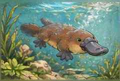

Puddle Detective Walk
Bring a notebook and magnifying glass to observe water, leaves, tracks, and other details without disturbing wildlife.
Setting: Creekside or backyard
Explore a new way to learn about the creeks, ponds, and outdoor spaces around you.
The Silly Platypus activity station brings the shop's discovery kits to life with a few small interactive tools. Find an activity that fits your plans, keep a record of something you notice, or put together a sample kit before your next outdoor afternoon.
These tools are designed for families, students, and first-time nature explorers. You can use them to plan an activity, organize your observations, and see how a few simple supplies can make a creek walk more engaging.
All prices shown in the kit planner are fictional examples for this class project. The observation log stays in this page during your current visit and is not sent to a server.

Choose where you plan to explore and the kind of activity you want. The suggestions below update automatically.
Bring a notebook and magnifying glass to observe water, leaves, tracks, and other details without disturbing wildlife.
Setting: Creekside or backyard
Use a River Ranger Guide to record the plants, birds, and insects you notice along a marked nature trail.
Setting: Creekside
Create a tabletop model of a pond edge and think about how plants, shelter, and water support living things.
Setting: Indoors or backyard
Showing all three activity ideas.
Record a small discovery from your day. Add a title, date, and a few details, and the entry will appear in your journal below.
Your entries appear here for this visit only.
Choose a starter activity and add a few supplies. The estimated total and item list change whenever you update your selections.
Estimated sample total:
This planner is an example configurator, not a live checkout.